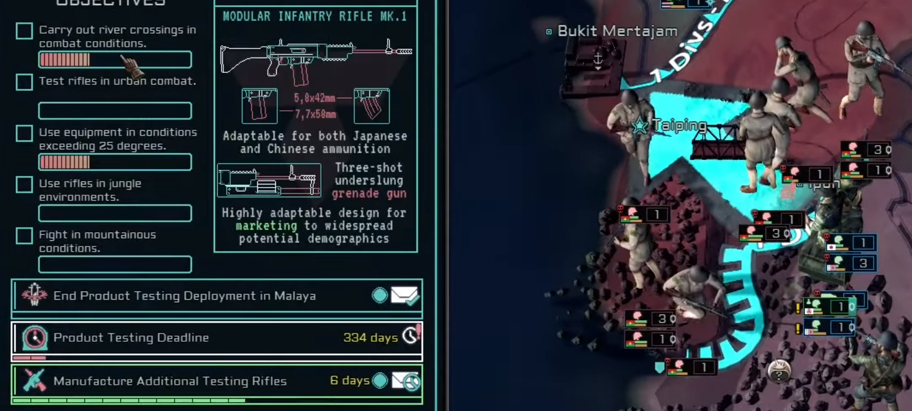

Game Total-Conversion Project - Extra
An example of content development in the last major update to release:
During development of release 1.4 "Silicon Dreams", in which I was involved with much of the content, I set out to designing a mechanic to change the gameplay loop of land-combat - the primary gameplay loop of the default game.
In the original game, the combat gameplay loop for sending a single "unit" to a conflict consists of finding and exploiting a gap in enemy lines in order to push through and rapidly end the conflict.
Whilst the mod already expands such scenarios to add extra mechanical depth, the goal in this update was to create a new way for the player to interact with the main combat gameplay loop itself.
To achieve this, I designed a system which would track other statistics of the unit in order to gauge "performance" which would than affect the player reward at the conclusion of the conflict or when a player chose to withdraw to save resources.
Such information is in the base game only tracked to affect the properties of unit commanders, and so a system to take this info and tally it for a different purpose was developed, also for this I designed a GUI to help the player keep track of their objectives and progress.
In addition to the primary stat tracking system, options were designed and added to improve ease of use and conveying information such as readily available deadline timers.
Once I had finished code and GFX for this first version of the mechanic, I began testing it through close cooperation and communication with the mod team QA department
Testers would test the mechanic during a testing playthrough, and provide feedback as well as general statistics of each test. This feedback helped guide further design choices in the further design of similar mechanics.
Statistics and feedback were vital the the fine-tuned balancing of the system, involving many different tracked values and interacting with the other game mechanics such as the economic system.
Testing reports of the mechanic showed that the mechanic was enjoyed by players, found to be unique and most importantly given the initial goal, saw players intentionally changing the way in which they played.
Players prioritised creating the ideal conditions to complete objectives, at times even hindering the overlords they were supposed to serve, in order to further the objectives and their ensuing rewards for high completion.
This fully achieved the objective of changing the normal gameplay loop and fit into the general themes of the update content.
Testing also showed that unpredictable AI behaviour could create unsuitable conditions for the mechanic before player involvement began.
To solve this, I implemented modifiers to the Ai controlled countries that would impede significant changes to the combat area until the player was actively involved.
Such modifiers would only take effect if the relevant country was player controlled, otherwise leaving AI to act naturally.
This mechanic was a total success in its design and implementation, and has been well received in the now-released update.
It helped me to develop my skills in design, and developing creative solutions to the problems of using often hard-coded default features.
It also helped me to practise working closely with the mod QA team in order to refine and improve on a concept.